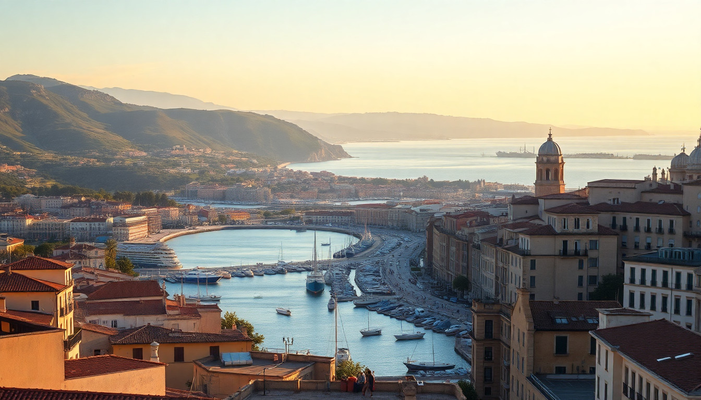

Where to Stay in Marseille: Best Neighborhoods for Every Budget

I landed at Marseille Provence, took the L91 bus into town, and immediately understood why this city divides opinions. It’s loud, gritty, and gloriously alive. Over three trips, I’ve slept in a budget bunk in Noailles, a mid-range Airbnb in Le Panier, and a splurge hotel overlooking the Vieux Port. Here’s what I learned about picking the right base.
What’s the best neighborhood for first-time visitors on a mid-range budget?
Vieux Port is where most people start, and for good reason. You’re steps from the ferry to Château d’If, the fish market, and the main street La Canebière. It’s touristy but not suffocatingly so, and the constant boat traffic gives it energy.
I stayed at Hotel Hermès on Rue Fortia — a small, family-run place with a rooftop terrace that looks straight down the port. Rooms are compact (this is Marseille, not a resort), but the location made up for it. For something slightly quieter, Hotel Carré Vieux Port has soundproofed windows and a solid breakfast buffet.
- Hotel Hermès — rooftop views, central, about €130/night
- Hotel Carré Vieux Port — modern, quiet, €150-€180/night
- La Résidence du Vieux Port — pricier but has balconies over the water
The trade-off: restaurants around the port are overpriced. Skip the bouillabaisse here — it’s a tourist trap. Instead, walk five minutes to Chez Yassine on Rue d’Aubagne for a proper panisse or a plate of merguez.
Is Le Panier worth the hype for a more authentic stay?
Yes, but with a caveat. Le Panier is the oldest district — narrow cobblestone alleys, laundry hanging between buildings, tiny galleries. It feels like a village inside a city. I loved it, but my wife found the hills exhausting after a full day of walking.
We rented a studio on Place des Moulins through Booking. It had a tiny kitchen and a view of the old windmills. The real win was proximity to La Mer à Boire — a natural wine bar with small plates that changed my opinion of French dining. The owner recommended Chez Étienne, a hidden pizzeria on Rue de Lorette that does a calzone the size of your head.
- Airbnb or Booking apartments — best value for groups; €80-€120/night
- Maison Montgrand — boutique hotel on the edge of Le Panier, modern, quiet
- La Mer à Boire — wine bar, not accommodation, but worth the detour
Downside: Le Panier has very few full-service hotels. Most options are short-term rentals. If you need a front desk, concierge, or elevator, stay elsewhere.
Where should budget travelers sleep without sacrificing safety?
Noailles is Marseille’s multicultural heart — chaotic, cheap, and full of character. I stayed at Vertigo Vieux Port Hostel on Rue des Petites Maries. It’s clean, social, and has a bar downstairs. The dorm beds are €30-€40, private rooms around €70.
The neighborhood gets a bad reputation from online forums, but I never felt unsafe. I walked back at midnight from the Marché de Noailles (open late, incredible produce) and the only risk was buying too many olives. The metro station Noailles connects you to the rest of the city in minutes.
- Vertigo Vieux Port Hostel — best hostel in the city, bar, rooftop
- Hotel Sylvabelle — basic but clean private rooms, €60-€80
- Marché de Noailles — street market, cheap eats, open until 8pm
Be aware: Noailles is loud. Motorcycles, street vendors, and the call to prayer from the nearby mosque all mix together. Bring earplugs.
What about the beaches — should I stay in Vallon des Auffes or Corniche?
If your priority is the Mediterranean rather than the city, base yourself along the Corniche Kennedy. I spent two nights at Hotel Le Rhul — literally on the waterfront, with a seafood restaurant downstairs that serves the best bouillabaisse I had in Marseille. Rooms are dated (think 1970s maritime), but the view of the Frioul islands makes up for it.
Vallon des Auffes is a tiny fishing port tucked under the corniche. It’s picturesque but tiny — one restaurant (Chez Fonfon, famous for bouillabaisse), one bakery, one bus stop. I’d only recommend it for a romantic two-night stay. You’ll need the bus (line 83) to reach the Vieux Port, which runs every 15 minutes.
- Hotel Le Rhul — waterfront, classic, €150-€200
- Chez Fonfon — legendary bouillabaisse, €50 per person
- Vallon des Auffes — charming but isolated; fine for a short escape
The beaches here are rocky, not sandy. Plage des Catalans is closest to the city — crowded but swimmable. Plage du Prado is artificial sand, cleaner, and family-friendly.
Which neighborhood has the best nightlife and dining scene?
Cours Julien — hands down. It’s a plateau above the Vieux Port, filled with graffiti, independent boutiques, and bars spilling onto the street. I stayed at Hotel Maison Saint-Louis on Rue Saint-Louis, a converted 18th-century building with a courtyard. It’s not cheap (€180-€220), but the location is unbeatable for evening hopping.
Start at La Caravelle for a pastis on the terrace, then walk to Le Drip for natural wine and small plates. For dinner, Les Amis de Mila does a killer couscous in a basement setting. The whole area feels like a permanent block party — in a good way.
- Hotel Maison Saint-Louis — boutique, courtyard, €180+
- Le Drip — wine bar, €5 glasses, open late
- La Caravelle — classic bar, views of Vieux Port
One warning: Cours Julien can be loud until 2am. If you’re a light sleeper, request a room facing the courtyard, not the street.
FAQ
Is Marseille safe for tourists in 2025? Yes, with normal city awareness. The Vieux Port, Le Panier, and Cours Julien are well-patrolled. Avoid walking alone late at night in the northern neighborhoods (Belle de Mai, Saint-Mauront) — they’re not tourist areas anyway. I’ve never had an issue, but I keep my phone in my front pocket and skip flashy jewelry.
What’s the best way to get from Marseille airport to the city center? The L91 bus is €10 and runs every 20 minutes to the Saint-Charles train station. It takes 30 minutes. A taxi costs €50-€60 fixed rate. The train (TER) from Vitrolles Aéroport station is cheaper (€5) but requires a shuttle from the terminal — I found it annoying and just take the bus.
Should I book a hotel or an Airbnb in Marseille? Hotel if you want service, concierge, or a reception desk. Airbnb if you want space, a kitchen, or a neighborhood like Le Panier. I’ve done both. For a short trip (2-3 days), a hotel near Vieux Port saves time. For a week, rent an apartment in Cours Julien or Le Panier.
Conclusion
- Vieux Port is the easiest base for first-timers — central, busy, and walkable to everything.
- Le Panier offers charm and authenticity but has limited hotel options.
- Noailles works for budget travelers who don’t mind noise and want real local life.
- Corniche / Vallon des Auffes is best for beach lovers and romantic stays.
- Cours Julien is the nightlife and food hub — stay there if you want to eat and drink well.